DV-GQ-002 · O monitoramento do plano corretivo aprova com ação pendente quando a operação chega sem o botão
Com a ação do plano ainda Pendente, o botão Aprovar do monitoramento não aparece. Mas o servidor aceita a mesma operação quando ela chega sem o botão: o plano foi aprovado ("Aprovado Plano Ação Corretiva") com a ação Pendente. A conferência existe só na tela.
Como reproduzir o erro, passo a passo
- Levar um desvio ao monitoramento do plano corretivo com uma ação ainda Pendente (o botão Aprovar não aparece).
- Enviar a operação de aprovação sem passar pelo botão (chamada direta da função da página).
Esperado
Exigir todas as ações concluídas antes de aprovar o plano.
Obtido
O plano foi aprovado ("Aprovado Plano Ação Corretiva") com a ação ainda Pendente.
Evidência (captura da tela)
DV-GQ-016 · Liberação do plano corretivo só tem Aprovar: o estado "reprovado" nunca é alcançado
A Liberação do Plano de Ação Corretivo também só tem o botão Aprovar, sem Reprovar. O código prevê o estado "Reprovada Plano Ação Corretiva", mas a tela não oferece o caminho: esse estado nunca é alcançado por ninguém. Mesmo problema do DV-GQ-012, agora no lado corretivo. Reconfirmado em 21/10/2026 (P9.3, P12.1): Aprovar aceita "Não".
Como reproduzir o erro, passo a passo
- Levar um desvio até "Pendente Monitoramento do Plano Ação Corretiva" (passando por CAPA, plano e execução).
- Na Liberação do Plano de Ação Corretivo, procurar o botão Reprovar.
Esperado
Existir o caminho de reprovar o plano corretivo e o desvio seguir para uma tela que o trate (o caso pedia registrar se o desvio ficasse sem tela para seguir).
Obtido
Só existe o botão Aprovar; a reprovação nunca pode ser feita pela tela.
Evidência (captura da tela)
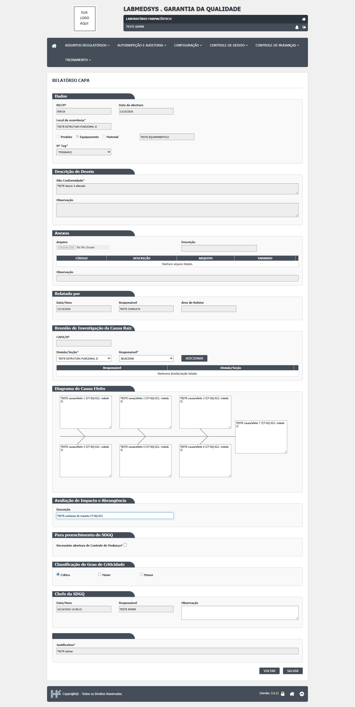
DV-GQ-020 · O plano de ação corretiva é aceito sem nenhuma ação
O plano de ação corretiva é aceito sem nenhuma ação. O que a tela mostra: "Alteração efetuada com sucesso."; o desvio vai a Pendente Monitoramento sem ação.
Como reproduzir o erro, passo a passo
- Adicionar uma ação, remover pela lixeira, salvar o plano.
Esperado
Recusar o plano sem nenhuma ação.
Obtido
"Alteração efetuada com sucesso."; o desvio vai a Pendente Monitoramento sem ação.
Evidência (captura da tela)
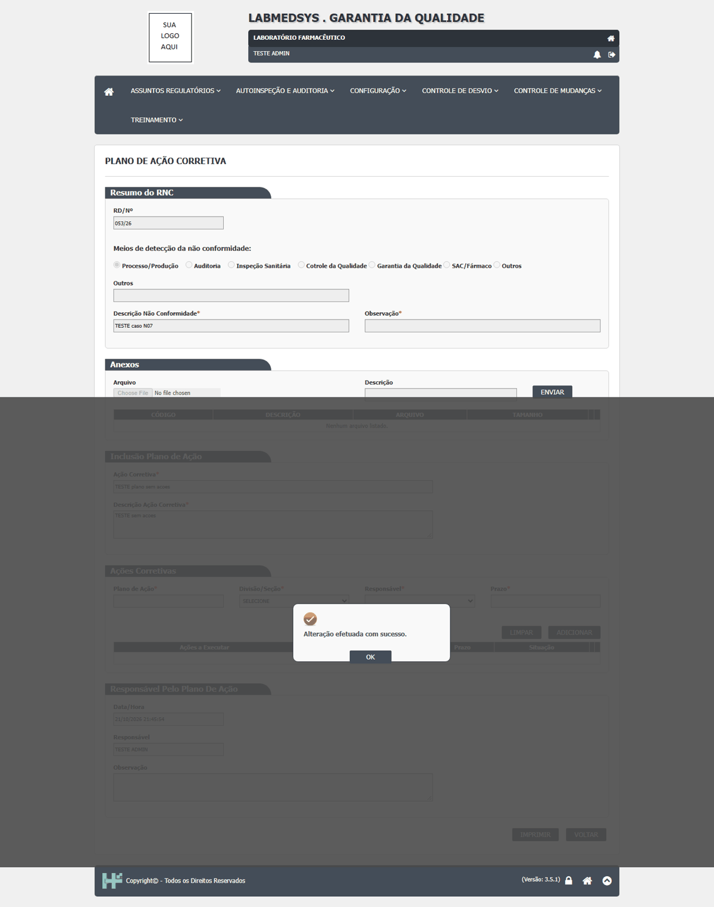
DV-GQ-021 · O monitoramento corretivo aprova com "Implementada = Não", com ação inexistente e com plano sem ações
O monitoramento corretivo aprova com "Implementada = Não", com ação inexistente e com plano sem ações. O que a tela mostra: Aprova e o desvio vai a Aprovado Plano Ação Corretiva.
Como reproduzir o erro, passo a passo
- Resultado com Ação Nº 99 (inexistente), Aprovar.
- Também Implementada = Não.
- Também plano sem ações.
Esperado
Recusar.
Obtido
Aprova e o desvio vai a Aprovado Plano Ação Corretiva.
Evidência (captura da tela)
DV-GQ-025 · Ação concluída com prazo vencido ou data anterior à abertura é aceita sem aviso nem justificativa
Ação concluída com prazo vencido ou data anterior à abertura é aceita sem aviso nem justificativa. O que a tela mostra: Tudo aceito sem aviso nem justificativa; a justificativa do histórico fica vazia.
Como reproduzir o erro, passo a passo
- Concluir ação com prazo vencido.
- Data anterior à abertura.
- Regravar conclusão.
Esperado
Aviso de atraso e justificativa.
Obtido
Tudo aceito sem aviso nem justificativa; a justificativa do histórico fica vazia.
Evidência (captura da tela)
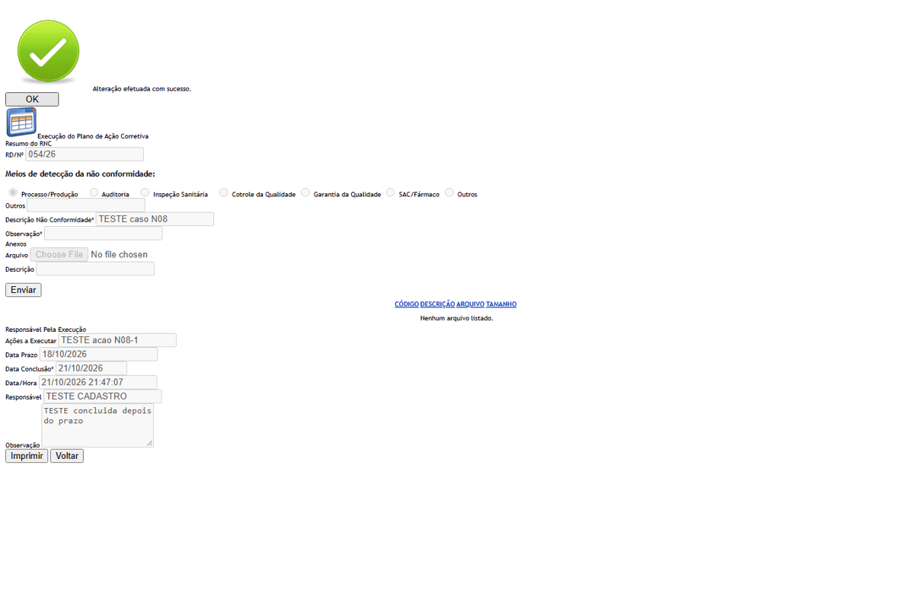
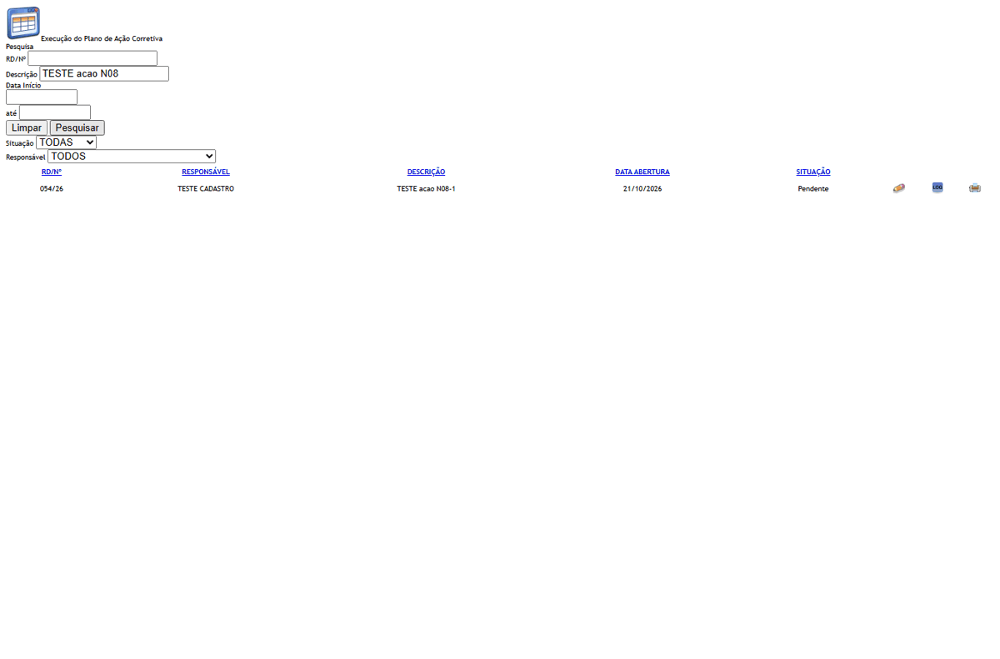
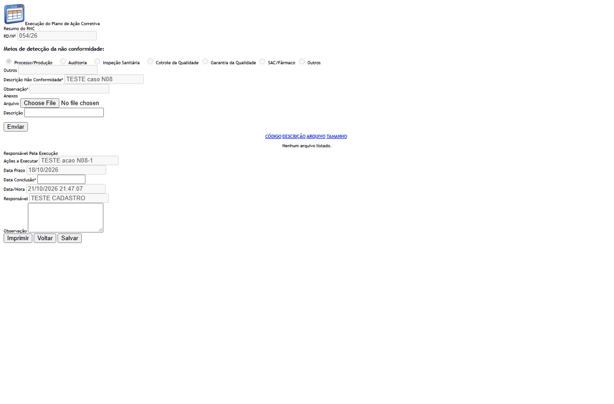
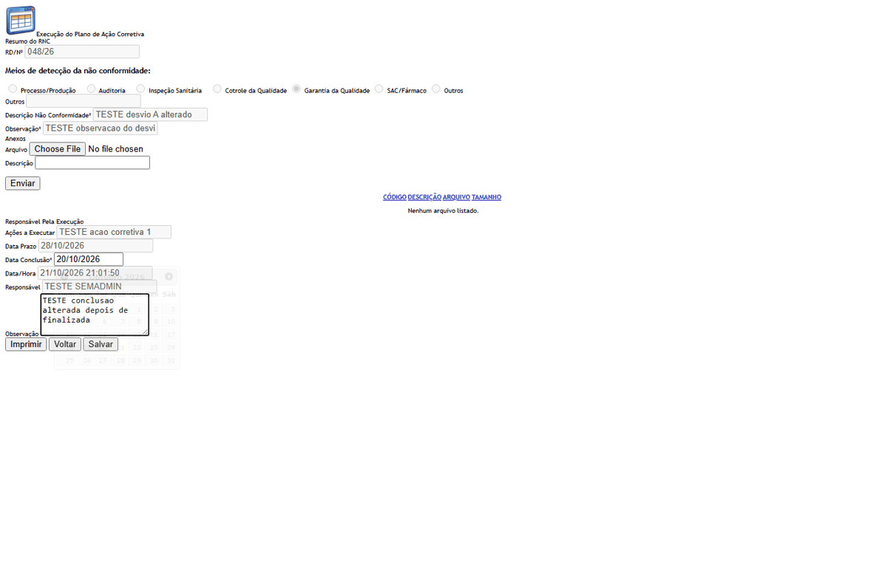
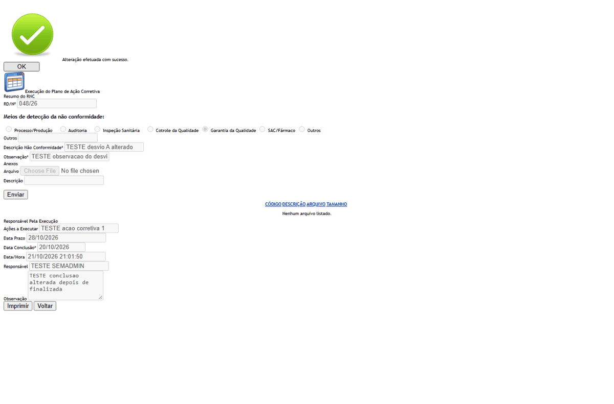
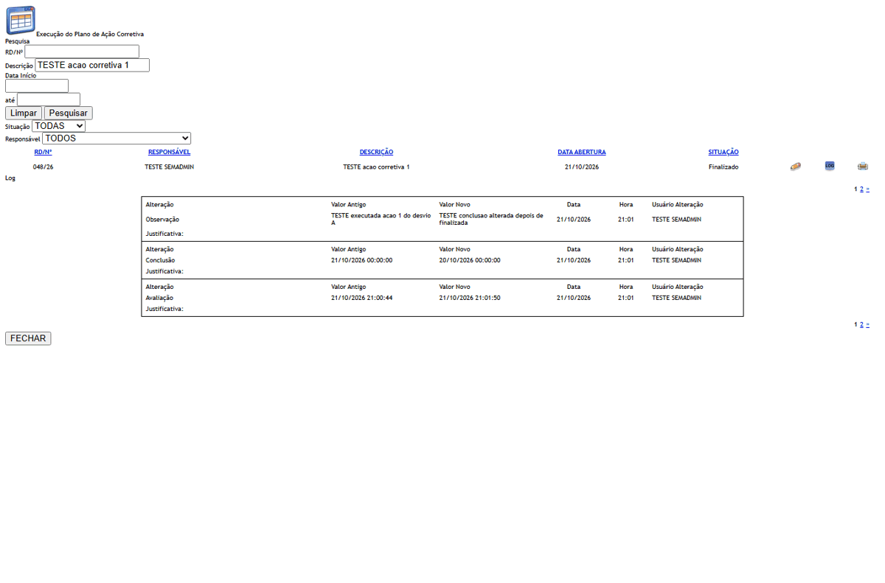
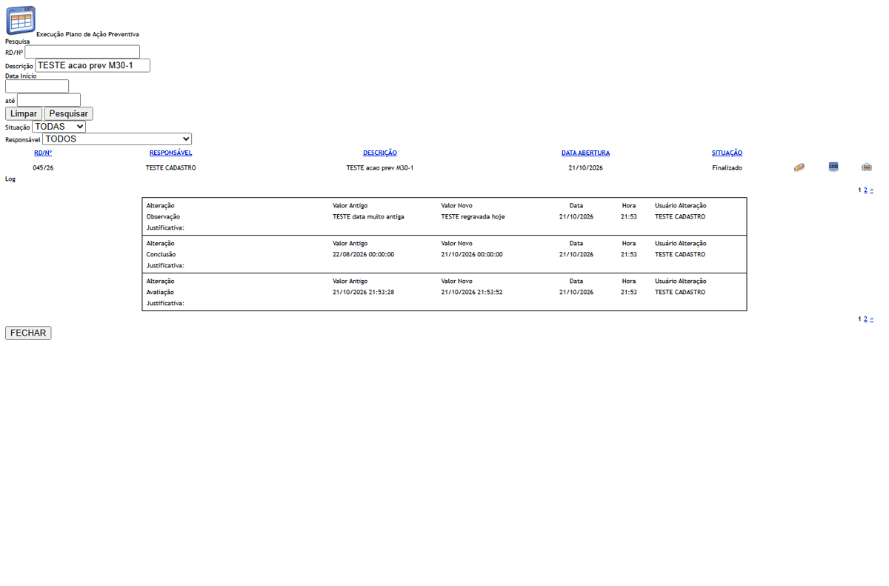
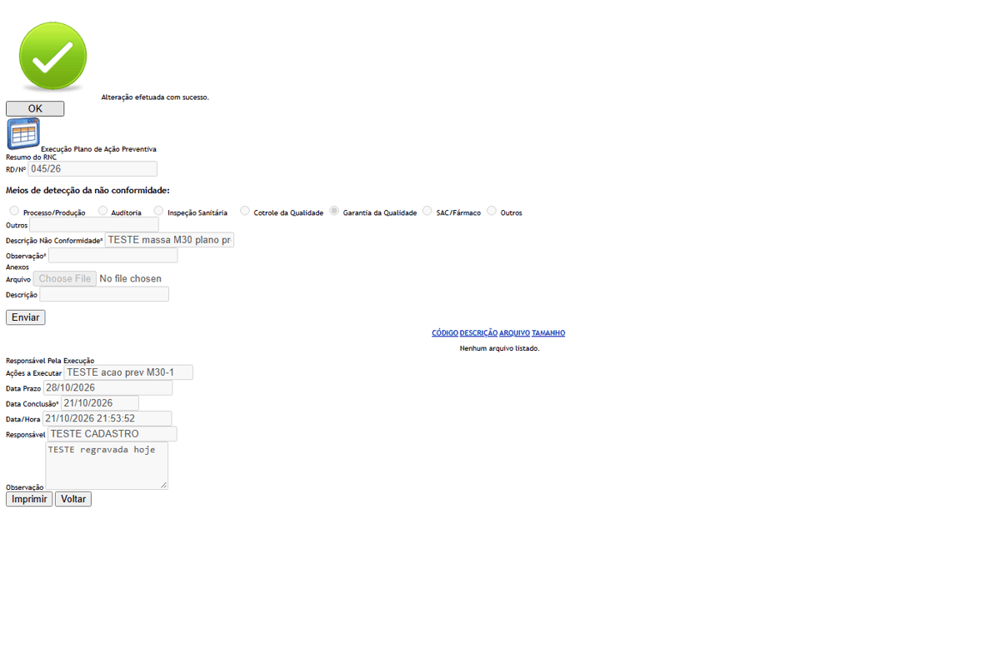
DV-GQ-086 · O Relatório de CAPA impresso sai com uma mensagem de erro no lugar da avaliação
O Relatório de CAPA impresso traz uma mensagem de erro no lugar da avaliação, em todos os PDFs de CAPA.
Como reproduzir o erro, passo a passo
- Imprimir o Relatório de CAPA pelas telas 7 a 12 (visto em 038, 040, 044, 053, 066 e 078).
Esperado
Relatório completo com a avaliação.
Obtido
No lugar do bloco da avaliação aparece uma mensagem de erro do gerador de relatórios (a avaliação não é carregada) e o resto do relatório sai. Visto nos desvios 038, 040, 044, 053, 066 e 078.
Sem captura de tela registrada para este defeito.
DV-GQ-277 · O usuário da área B abre a ação de outra área e conclui: "Confirma a alteração do item?" e "Alteração efetuada com sucesso."; a ação vira Finalizado
O usuário da área B abre a ação de outra área e conclui: "Confirma a alteração do item?" e "Alteração efetuada com sucesso."; a ação vira Finalizado. O nível 1 foi barrado (volta para a lista, sem mensagem). O histórico registra o usuário da área B.
Como reproduzir o erro, passo a passo
- Desvio 089/26 com ação pendente de um usuário de nível 2 da área A;
- outro usuário de nível 2 (área B) abre pelo endereço da ação (Id 53, IdRnc 89), preenche data e observação e salva.
Esperado
Só o responsável da ação (ou a GQ) abre e conclui a ação; o outro usuário volta para a lista.
Obtido
O usuário da área B abre a ação de outra área e conclui: "Confirma a alteração do item?" e "Alteração efetuada com sucesso."; a ação vira Finalizado. O nível 1 foi barrado (volta para a lista, sem mensagem). O histórico registra o usuário da área B.
Evidência (captura da tela)
DV-GQ-024 · A observação de uma ação finalizada volta vazia ao reabrir a execução
A observação de uma ação finalizada volta vazia ao reabrir a execução. O que a tela mostra: A observação vem vazia.
Como reproduzir o erro, passo a passo
- Reabrir pelo lápis uma ação finalizada com observação.
Esperado
A observação aparece.
Obtido
A observação vem vazia.
Evidência (captura da tela)
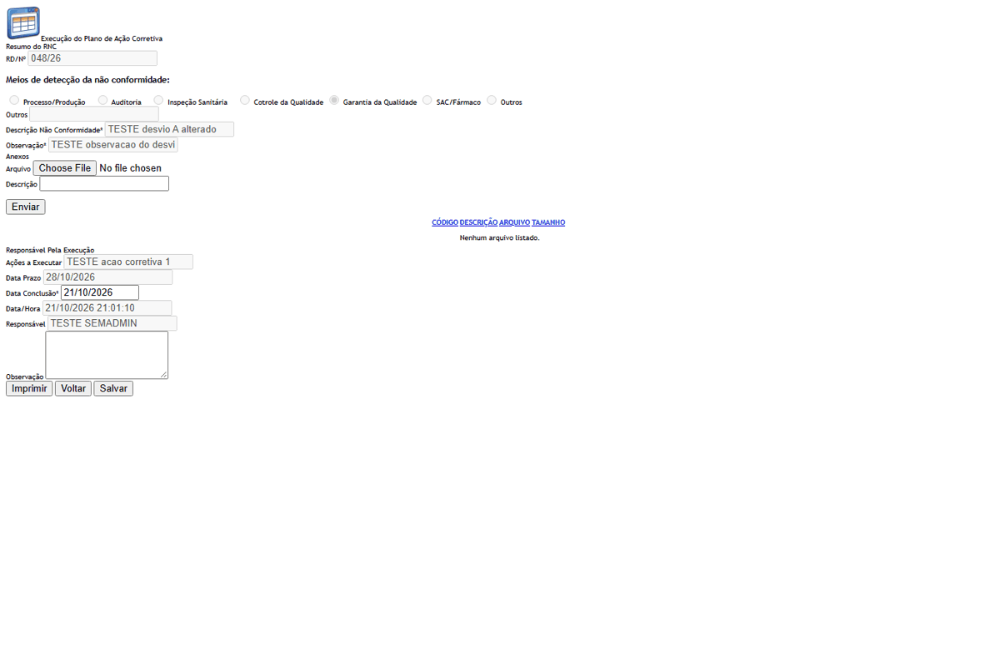
DV-GQ-026 · O filtro por RD com o ano (por exemplo 030/26) não acha o desvio na maioria das telas
O filtro por RD com o ano (por exemplo 030/26) não acha o desvio na maioria das telas. O que a tela mostra: Não acha em 9 de 12 telas; funciona nas telas 1, 2 e 6.
Como reproduzir o erro, passo a passo
- Filtro RD/Nº com o número e o ano (por exemplo "030/26").
Esperado
Achar o desvio.
Obtido
Não acha em 9 de 12 telas; funciona nas telas 1, 2 e 6.
Evidência (captura da tela)
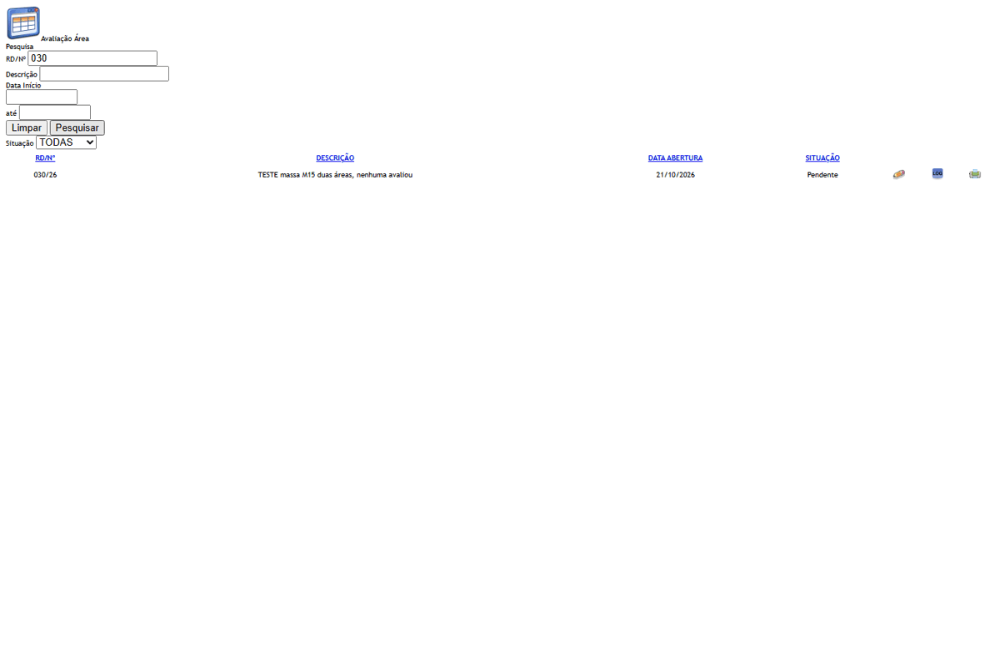
DV-GQ-029 · O botão Editar aparece nas listas para quem não deveria editar
O botão Editar aparece nas listas para quem não deveria editar. O que a tela mostra: O botão Editar aparece; nas telas 7 e 9 o clique devolve à lista; sem grupo a lista de Avaliação Área mostra Editar.
Como reproduzir o erro, passo a passo
- Usuário sem grupo (ou de nível 2) abre as listas.
Esperado
Lista sem botões de edição.
Obtido
O botão Editar aparece; nas telas 7 e 9 o clique devolve à lista; sem grupo a lista de Avaliação Área mostra Editar.
Evidência (captura da tela)
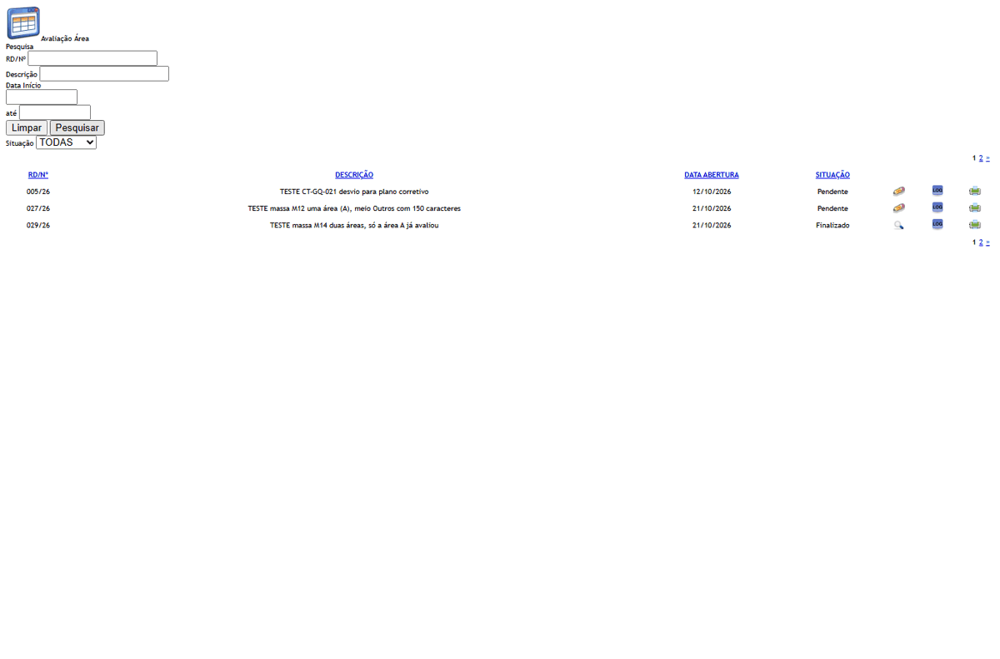
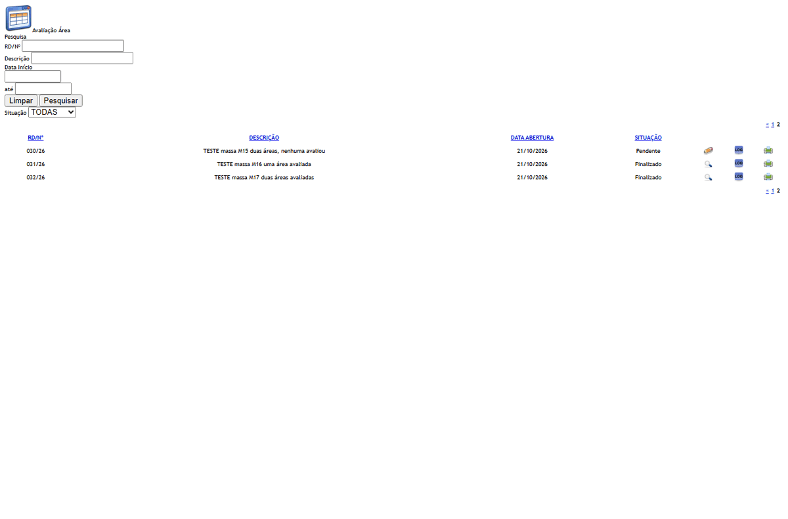
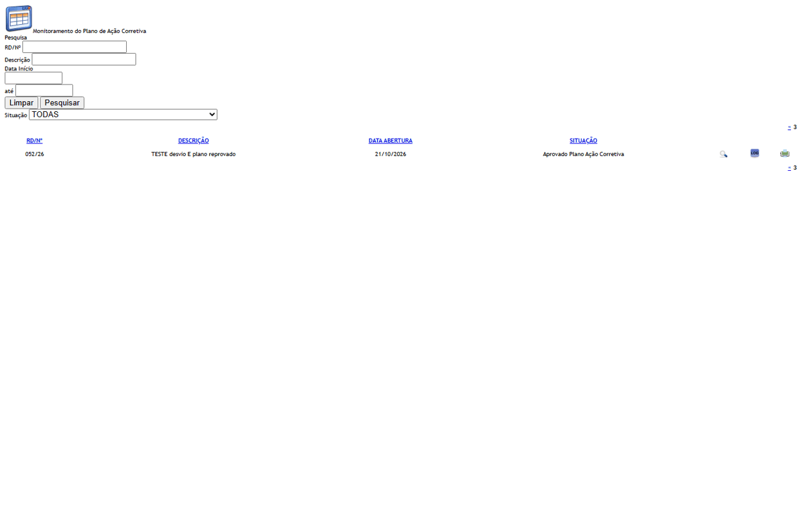
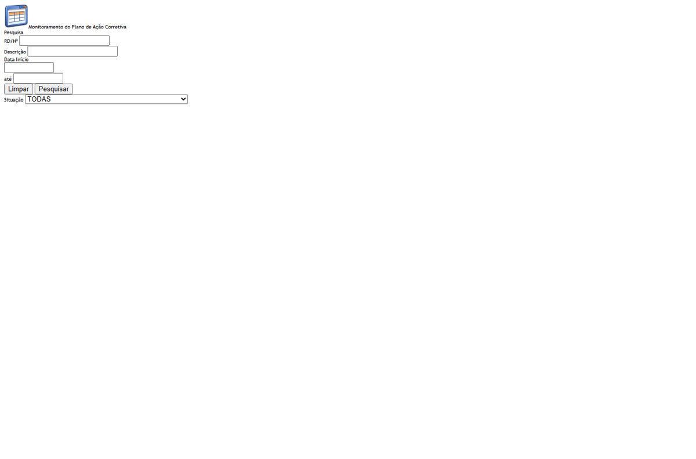
DV-GQ-048 · Salvar duas vezes seguidas duplica o resultado do monitoramento corretivo
Salvar duas vezes seguidas duplica o resultado do monitoramento corretivo. O que a tela mostra: O resultado fica duplicado.
Como reproduzir o erro, passo a passo
- Salvar duas vezes seguidas, sem recarregar, com um resultado novo.
Esperado
Um só resultado.
Obtido
O resultado fica duplicado.
Evidência (captura da tela)
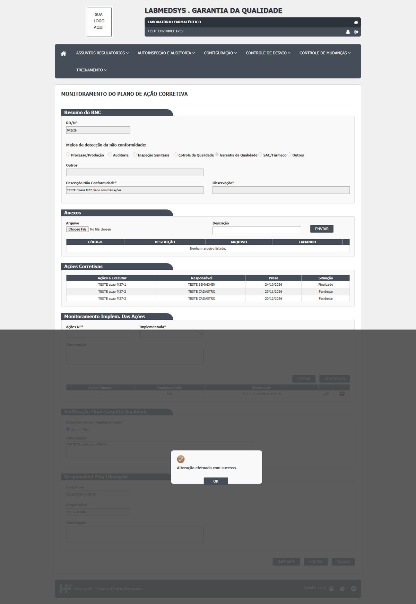
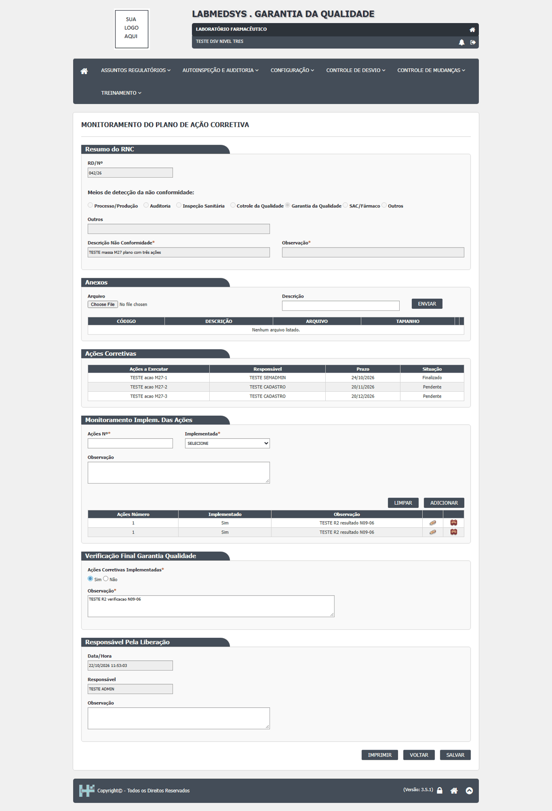
DV-GQ-049 · Ao adicionar um resultado, a grade mostra só o novo até salvar e reabrir
Ao adicionar um resultado, a grade mostra só o novo até salvar e reabrir. O que a tela mostra: A grade mostra só o novo até salvar e reabrir.
Como reproduzir o erro, passo a passo
- Com resultados salvos, adicionar um novo.
Esperado
Grade com todos.
Obtido
A grade mostra só o novo até salvar e reabrir.
Evidência (captura da tela)
DV-GQ-050 · Editar uma ação do plano corretivo apaga a divisão e o responsável
Editar uma ação do plano corretivo apaga a divisão e o responsável. O que a tela mostra: Divisão e responsável voltam em branco; sem escolher de novo, o plano é recusado.
Como reproduzir o erro, passo a passo
- Editar pelo lápis uma ação do plano.
Esperado
Campos preenchidos como estavam.
Obtido
Divisão e responsável voltam em branco; sem escolher de novo, o plano é recusado.
Evidência (captura da tela)
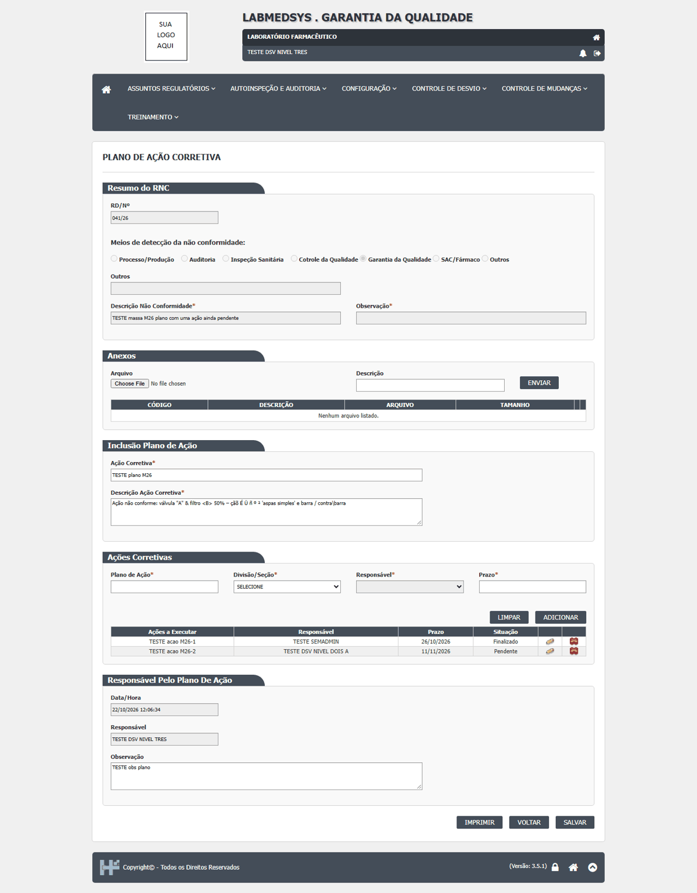
DV-GQ-060 · O filtro de situação "Finalizado" ou "Aprovado" devolve a lista inteira
O filtro de situação "Finalizado" (tela 4) e "Aprovado" (tela 9) devolve a lista inteira.
Como reproduzir o erro, passo a passo
- Na tela Avaliação Área, filtrar a Situação por "Finalizado" e pesquisar.
- Na tela Monitoramento do Plano de Ação Corretiva, filtrar por "Aprovado" e pesquisar (a Monitoramento do Plano de Ação Preventiva repete o problema, rodada 3 parte C).
Esperado
Só os desvios na situação escolhida.
Obtido
Avaliação Área: 7 linhas, inclusive os pendentes (igual a TODAS). Monitoramento corretivo: 14 linhas, inclusive os 6 pendentes. Na Monitoramento preventiva o filtro "Aprovado" também devolve a lista inteira.
Evidência (captura da tela)
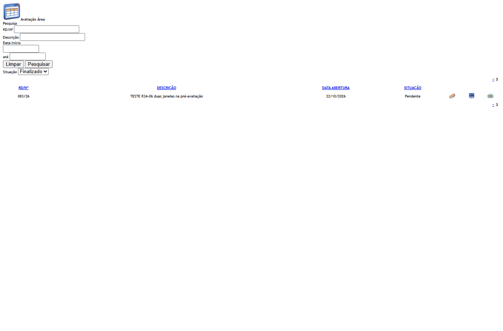
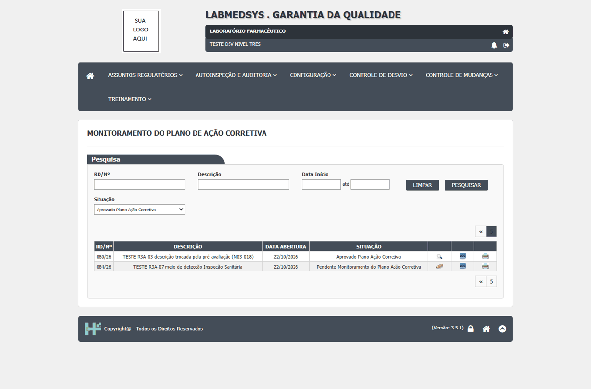
DV-GQ-066 · O filtro de situação do Plano de Ação Corretiva devolve vazio
O filtro de situação da lista do plano devolve vazio para a única situação que oferece.
Como reproduzir o erro, passo a passo
- Tela 7, Situação "Pendente Plano Ação Corretiva", Pesquisar.
Esperado
Os 8 desvios dessa situação.
Obtido
Lista vazia.
Sem captura de tela registrada para este defeito.
DV-GQ-067 · Filtro de datas: a Data Fim não inclui o próprio dia nas telas 7 a 10
Data Fim não inclui o próprio dia (Início = Fim dá lista vazia); na tela 7 só Início é ignorado e nas telas 7 e 8 só Fim é ignorado.
Como reproduzir o erro, passo a passo
- Nas telas 7, 8 e 9, Início e Fim iguais.
- Só Início.
- Só Fim.
Esperado
O próprio dia incluído; só Início e só Fim filtrando.
Obtido
Início = Fim dá vazio; o dia final nunca entra; na tela 7 só Início e só Fim são ignorados; na tela 8 só Fim é ignorado; na tela 9 só Fim filtra sem o dia.
Evidência (captura da tela)
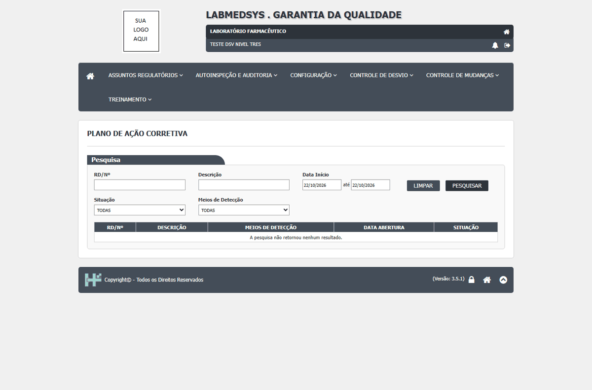
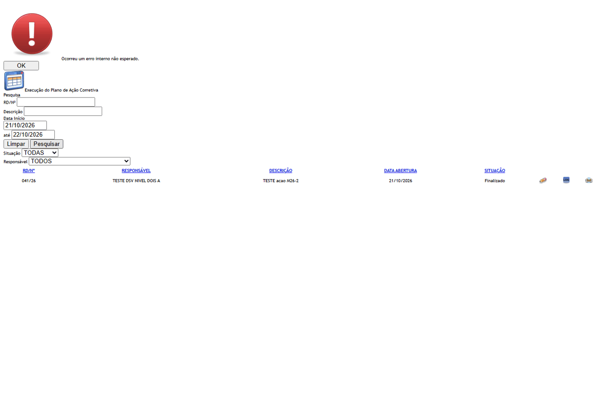
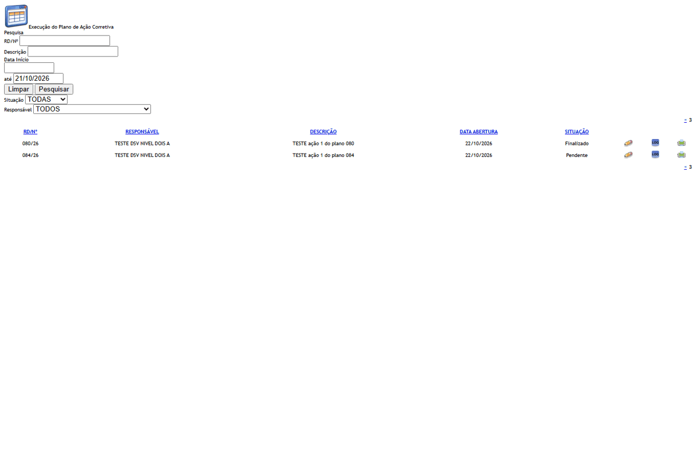
DV-GQ-068 · Prazo de ação com data impossível entra na grade e dá erro inesperado ao salvar
Prazo com data impossível entra na grade; ao salvar dá "Ocorreu um erro inesperado."; 1900 diz "obrigatório"
Como reproduzir o erro, passo a passo
- Tela 7, ação com prazo 31/02/2026 (ou 00/00/0000), Adicionar, Salvar.
Esperado
Recusa no campo.
Obtido
A grade aceita; Salvar: "Ocorreu um erro inesperado." Com 01/01/1900: "O Prazo na Ação Corretiva número 1 é obrigatório."
Evidência (captura da tela)
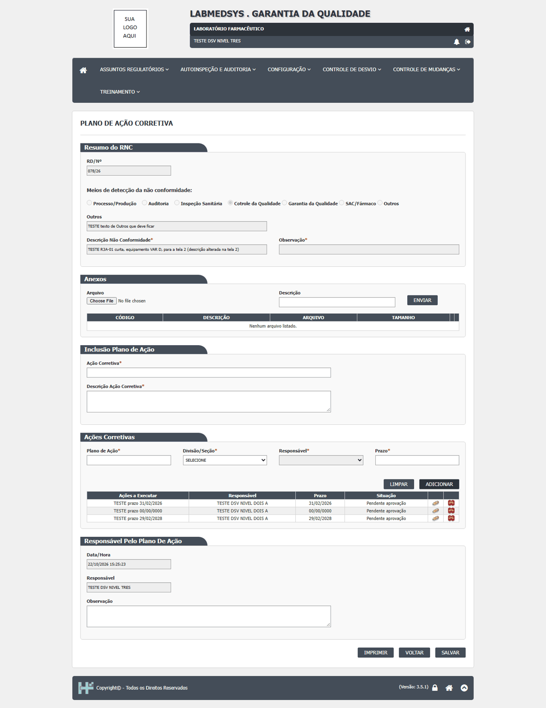
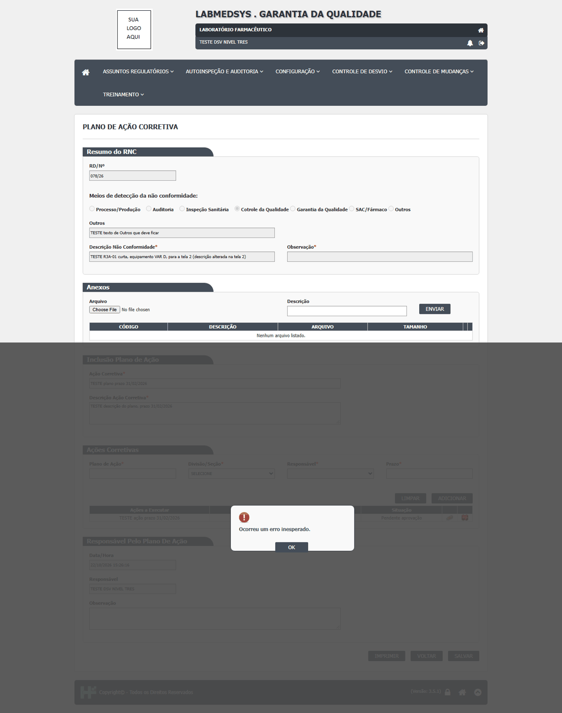
DV-GQ-071 · Conclusão da ação antes da abertura do desvio e em 1900 é aceita
Conclusão antes da abertura do desvio e em 1900 é aceita.
Como reproduzir o erro, passo a passo
- Concluir uma ação em 21/10/2026 (desvio aberto em 22/10) e outra em 01/01/1900.
Esperado
Recusa.
Obtido
As duas gravam.
Sem captura de tela registrada para este defeito.
DV-GQ-073 · A lista de execução mostra uma só ação por desvio
A lista mostra uma só ação por desvio; a segunda só aparece no filtro Pendente.
Como reproduzir o erro, passo a passo
- Usuário responsável por duas ações do mesmo desvio, pesquisar TODAS, finalizar a ação mostrada, pesquisar de novo.
Esperado
As duas acessíveis.
Obtido
Uma linha por desvio; a ação 2 só no filtro Pendente.
Sem captura de tela registrada para este defeito.
DV-GQ-074 · O anexo enviado na execução não aparece no Monitoramento
Anexo enviado na execução não aparece no Monitoramento.
Como reproduzir o erro, passo a passo
- Tela 8, enviar anexo, salvar.
- Abrir o Monitoramento do mesmo plano.
Esperado
Anexo ligado ao desvio e visível.
Obtido
"Nenhum arquivo listado."
Evidência (captura da tela)
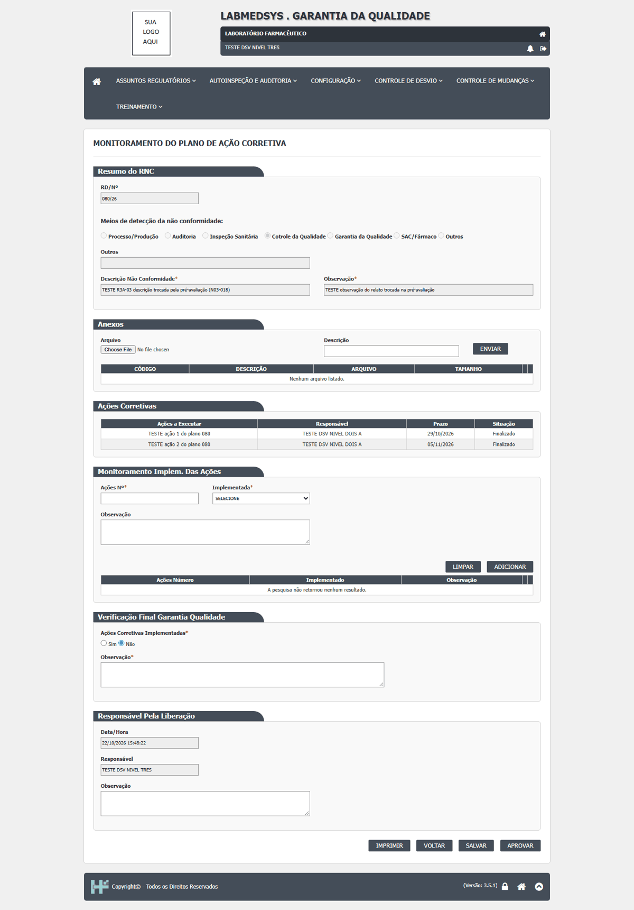
DV-GQ-075 · Resultado adicionado sem Sim ou Não é gravado como Não
Resultado adicionado sem Sim ou Não é gravado como Não.
Como reproduzir o erro, passo a passo
- Tela 9, Adicionar resultado sem escolher Implementada.
Esperado
Recusa.
Obtido
A linha entra como "Não".
Evidência (captura da tela)
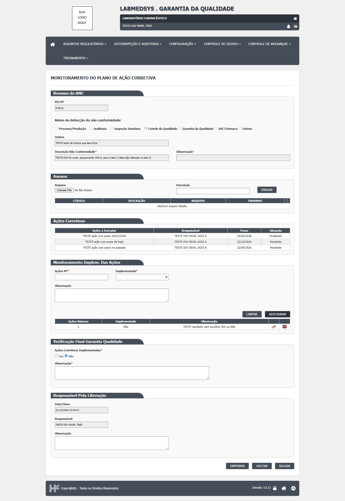
DV-GQ-076 · O bloco "Responsável Pela Liberação" mostra o responsável do desvio, não quem libera
O bloco Responsável Pela Liberação mostra o responsável do desvio.
Como reproduzir o erro, passo a passo
- Tela 9, abrir o Monitoramento de um desvio cujo responsável é outra pessoa (041/26), ler o bloco Responsável Pela Liberação.
Esperado
O usuário que libera.
Obtido
O responsável do desvio.
Evidência (captura da tela)
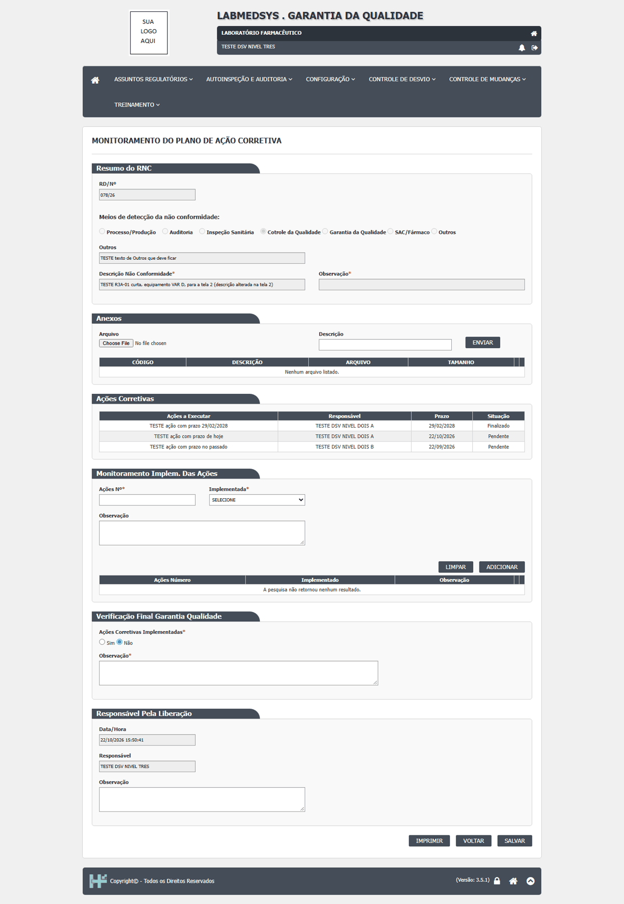
DV-GQ-085 · Editar uma ação do plano corretivo (lápis e Adicionar) apaga o responsável
Editar uma ação (lápis, Adicionar) apaga o responsável.
Como reproduzir o erro, passo a passo
- Tela 7, plano com uma ação, lápis da ação, mudar só o prazo, Adicionar.
Esperado
Responsável mantido.
Obtido
Responsável em branco na grade.
Evidência (captura da tela)
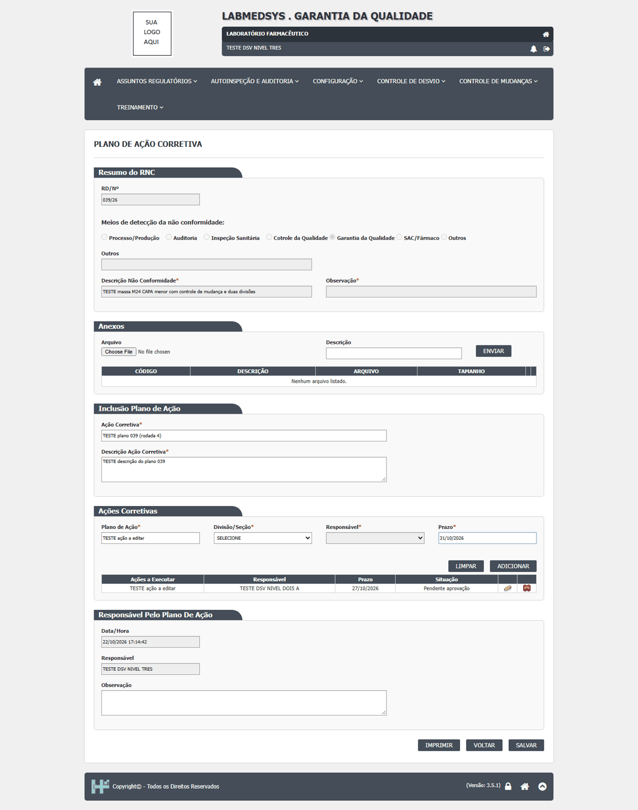
DV-GQ-087 · O PDF do plano corretivo não traz título, descrição nem observação do plano
O PDF do plano corretivo não traz título, descrição nem observação do plano.
Como reproduzir o erro, passo a passo
- Tela 7, título, descrição e observação do plano preenchidos, Salvar, Imprimir.
Esperado
Texto no PDF.
Obtido
O PDF só traz as ações. (O plano preventivo traz título e descrição, N10-16.).
Evidência (captura da tela)
DV-GQ-088 · A observação da execução do plano corretivo não é guardada nem impressa
A observação da execução do plano corretivo não é guardada nem impressa.
Como reproduzir o erro, passo a passo
- Tela 8, ação pendente, data e observação, Salvar, reabrir.
Esperado
Observação guardada.
Obtido
"Alteração efetuada com sucesso.", observação vazia ao reabrir e fora do PDF. Na tela 11 (preventiva) a observação é guardada.
Evidência (captura da tela)
DV-GQ-331 · O botão Editar dos planos e do Monitoramento aparece para todos os perfis, mas só o Nível 3 consegue abrir
Nas listas do Plano de Ação Corretiva, do Monitoramento e do Plano de Ação Preventiva, os 7 perfis testados (Níveis 1, 2 e 3) veem o botão Editar em todas as linhas. Ao clicar, só o Nível 3 abre a tela; os Níveis 1 e 2 voltam para a lista, sem aviso.
Como reproduzir o erro, passo a passo
- Entrar com usuário de Nível 1 ou 2.
- Abrir a lista de uma das três telas e clicar em Editar.
- Observar que a tela volta para a lista, sem mensagem.
Esperado
Quem não pode editar não vê o botão, ou recebe uma mensagem clara ao tentar.
Obtido
O botão aparece para todos; no clique, Níveis 1 e 2 voltam para a lista sem explicação.
Sem captura de tela registrada para este defeito.
DV-GQ-069 · O campo Observação do plano é apagado ao enviar um anexo
O campo Observação é apagado ao enviar um anexo.
Como reproduzir o erro, passo a passo
- Tela 7, digitar a Observação, enviar um anexo.
Esperado
A observação continua.
Obtido
Campo em branco.
Evidência (captura da tela)
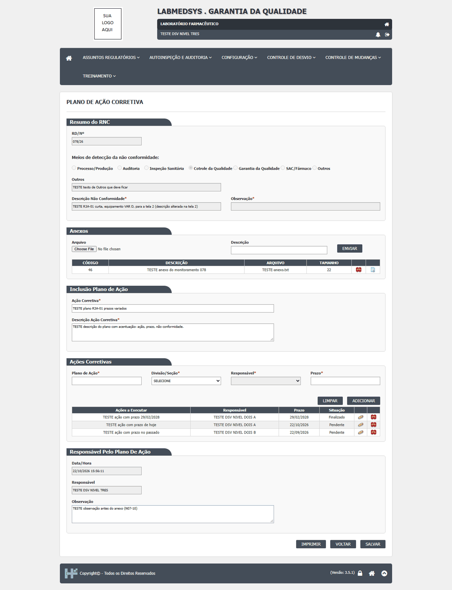
DV-GQ-070 · Data de conclusão com ano de 2 dígitos é aceita
Data de Conclusão aceita ano com 2 dígitos ("21/10/26").
Como reproduzir o erro, passo a passo
- Tela 8, Data de Conclusão 21/10/26, Salvar.
Esperado
Recusa por formato.
Obtido
"Alteração efetuada com sucesso.", gravado como 21/10/2026.
Sem captura de tela registrada para este defeito.
DV-GQ-072 · O histórico do plano mostra os nomes dos campos do relatório em vez dos do plano
No histórico, a descrição e a observação do plano aparecem com os nomes dos campos do relatório ("Rel. Desvios - Não Conformidade", "Observação").
Como reproduzir o erro, passo a passo
- Salvar o plano de ação corretiva de um desvio (no teste, o 078/26).
- Abrir o histórico do desvio.
Esperado
O histórico mostra os nomes dos campos do próprio plano de ação (descrição e observação do plano).
Obtido
A descrição e a observação do plano aparecem no histórico como "Rel. Desvios - Não Conformidade" e "Observação" (nomes dos campos do relatório); a Não Conformidade original, vista na tela Execução do Plano, não mudou.
Evidência (captura da tela)
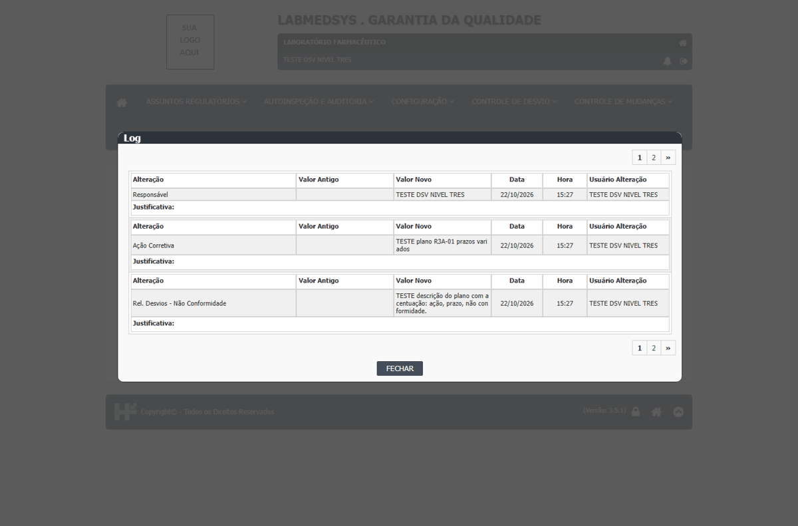
DV-GQ-332 · Seis das sete telas do Controle de Desvios testadas abrem sem login
Sem nenhuma sessão, o endereço dessas telas abre (código 200) com os filtros. Ao pesquisar, nenhuma linha vem, e o PDF do Acompanhamento RD dá erro 500; Relatório de Desvios dá "Server Error". Os dados não vazam nesse teste, mas a tela não exige sessão (relação com SEG-GQ-01).
Como reproduzir o erro, passo a passo
- Sem nenhuma sessão aberta, abrir o endereço de cada tela do módulo GQ.
Esperado
Redirecionar ao login.
Obtido
A página abre; ao pesquisar, nenhuma linha vem; o PDF do Acompanhamento dá erro 500.
Sem captura de tela registrada para este defeito.